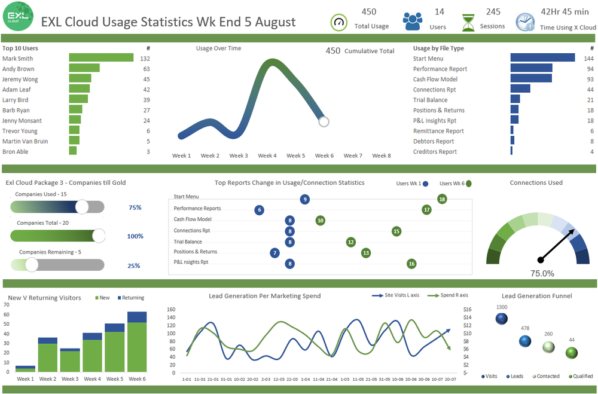

6 Reporting Design
6.1 Learning goals
- Understand the importance of dashboards for reporting user-oriented results
- Apply dashboard design principles
- Evaluate the design of existing dashboards
6.2 Data visualization to speed up decision-making
The importance of data visualization in data-driven decision-making cannot be overstated. As organizations continue to generate and accumulate massive amounts of data, the ability to effectively visualize and communicate this information becomes critical in making informed decisions. Data visualization serves as a bridge between raw data and human understanding, making complex datasets more accessible, understandable, and usable for decision-makers.
As already discussed in Chapter 3, data visualization helps identify trends, patterns, and outliers that may not be apparent in raw data alone. By using charts, graphs, and other visual elements, data visualization can reveal hidden relationships and connections between data points, and support exploratory data analyses. This newfound understanding can lead to the discovery of new opportunities, the identification of potential risks, and the ability to make better predictions about future events.

Now we have moved forward and are at the declarative stage. At this stage, our aim to facilitate faster decision-making. By presenting data in a visual format, decision-makers can quickly grasp the key insights and trends in the data. This rapid comprehension enables them to make informed decisions with greater confidence and speed, as opposed to spending valuable time sifting through spreadsheets or dense reports.
What enables this speediness when it comes to visualizations? The human brain’s ability to quickly process visualizations plays a crucial role in comprehending complex information with ease. This rapid processing capability can be traced back to the evolutionary development of our brain, which has been wired to prioritize visual processing in response to the environmental demands faced by our ancestors. Our ancestors relied heavily on their ability to perceive and interpret visual cues from the environment for survival, such as identifying predators, locating food, and navigating the terrain. Consequently, the human brain evolved to prioritize visual processing, resulting in a highly efficient and effective system for interpreting visual information.
Furthermore, the human brain is particularly adept at recognizing patterns, which is a key aspect of data-driven decision making. Visualizations facilitate pattern recognition by presenting data in a way that highlights trends, correlations, and anomalies. This enables decision-makers to identify insights and make data-driven decisions more effectively and efficiently than if they were to rely solely on textual or numerical data. The solution is not one or the other, but using text and numbers as complements to visuals.
6.3 Interactive dashboards for business analysts
Interactive dashboards are versatile and dynamic data visualization tools that provide users with the ability to engage with, manipulate, and explore data through various user interface elements and features. As the name suggests, these dashboards are called “interactive” because they allow users to actively engage with the data, rather than passively consuming static visualizations. The interactivity enables users to dive deeper into the data, customize views, and uncover insights that may not be immediately apparent in a static representation.
These dashboards are the most common form of visualizations for business analysts and controllers, who are responsible for monitoring and managing an organization’s (financial) performance, operational efficiency, and overall business health. Controllers ensure accurate financial and non-financial reporting, analyze performance metrics, identify potential risks, and provide actionable insights to support decision-making across the organization. Therefore, the consumer of the dashboard is the analysts/controller and/or other stakeholders who require insights from the underlying data.

Source: https://www.thesmallman.com/dashboards
One of the primary advantages of interactive dashboards is their ability to provide real-time or near-real-time data updates (if well-integrated into the company’s information systems). This feature allows users to monitor financial and operational performance as it occurs, enabling them to identify and address potential issues more quickly and make timely decisions based on the most current information available. The rapid access to up-to-date data ensures that users can stay ahead of any emerging trends or anomalies, allowing them to proactively manage the organization’s health.
Efficient monitoring of KPIs is another crucial aspect of interactive dashboards. Users often need to track and analyze multiple KPIs to assess the organization’s financial performance and operational efficiency. Interactive dashboards provide a centralized platform for monitoring these KPIs, making it easier for users to spot trends, identify areas for improvement, and evaluate the impact of strategic initiatives on the organization’s performance.
A range of interactive elements is another significant benefit of such dashboards. Features such as drill-down capabilities, tooltips, and filtering enable controllers and other users to delve deeper into the data where considered necessary. This deeper level of analysis leads to a better understanding of the organization’s health.
Interactive dashboards offer customization and flexibility, empowering users to tailor the dashboard to their unique needs and preferences. With the ability to easily customize views, filters, and parameters, users can focus on the specific data and metrics most relevant to their role and responsibilities. This flexibility makes it easier for users to track and analyze the performance of various financial and operational aspects of the organization.
Interactive dashboards also foster improved collaboration and communication among stakeholders within the organization. By presenting data in a visually appealing and easily digestible format, controllers can share their findings and insights more effectively with other stakeholders, such as senior management, investors, and department heads. This improved communication encourages a shared understanding of the data, allowing everyone involved to participate in the decision-making process and contribute their unique perspectives and insights, driving more informed and data-driven decision-making across the organization.
For these benefits to materialize, we should understand some important design principles when creating such a dashboard.
6.4 Principles of effective dashboard design
6.4.1 Identify your audience
To create a truly effective dashboard, it is essential to understand your target audience (again, don’t forget, you yourself might be the target audience for your own daily work!). The user is always the most important factor in dashboard design. To cater to their needs, it is essential to develop an intimate knowledge of your audience. Identifying the relevant information to display on a dashboard can be challenging, but understanding users’ expectations, current status, and any urgent information they may need can streamline the process.
Creating so-called personas can help. A persona is a representation of a significant portion of your users, often incorporating the characteristics of thousands of individuals. Personas help designers understand the mindset of the people who will use their products and services, or in our case, consume the dashboard. Start by conducting both qualitative and quantitative user research to gather data about your users. Use various research methods like surveys, web analytics, user interviews, focus groups, or contextual interviews. Analyze the collected data to identify patterns and segment users into distinct groups. Once you have a better understanding of your user groups, decide on a number of personas, ideally between one and four, and categorize them into primary and secondary personas. For each persona, you can give a name, image, demographics, psychographics, and a summarizing quote. Make sure these details are based on your research and relate to your dashboard. These personas will help you empathize with your users and design a better dashboard that caters to their needs and motivations.
6.4.2 Prioritize your goals
The second principle emphasizes prioritizing your goals. Once you understand your user personas, you should be able to answer the key question: “What will my users expect from this dashboard?” A great rule of thumb for data disclosure in dashboards is to always begin with a high-level overview and offer easy paths for users to increase the level of granularity. Dashboards should save users time and help them become more efficient by only showing relevant information and simplifying how it’s presented.
For instance, if a text-heavy document is difficult to read and understand, most people might skim the content or not read it at all. The same applies to analytics dashboards; if there’s too much content or an overly complex design, users might not bother using the analytics. It’s essential to remember that less is more, and once you’ve prioritized your goals and identified key takeaways, consider the five key takeaways users want to see in the dashboard.
Selecting the right KPIs is also part of the process. Depending on your audience, different KPIs are important. Here is a great overview of typical KPIs in various functions: https://www.datapine.com/kpi-examples-and-templates/
A rule of thumb states to not include more than 8-10 KPIs in one dashboard, otherwise the main message becomes blurry and users do not understand what to concentrate on. Of course, your possibilities to choose KPIs depend to your data and data availability.
6.4.3 Data sources and integration
A crucial step in creating an interactive dashboard is identifying and connecting to relevant data sources. These sources can include databases, spreadsheets, or APIs that provide access to data from various systems or platforms. Handling various data formats and structures may require integrating multiple sources and ensuring compatibility between them. This process may involve using connectors, APIs, or custom scripts to establish connections and retrieve data from the desired sources. This may require the help of data warehouse specialists in your company, certainly if you want to go real-time.
Once data sources have been identified and connected, the data must be prepared and transformed for optimal visualization. This process can involve cleaning, aggregating, and transforming data to ensure it is presented in a format that is easy to understand and interpret. In the best case, much of this has been done before you started the data analysis, but visual aspects will often require you to adapt the data further. Ensuring data quality and consistency is also crucial, as inaccurate or inconsistent data can lead to misleading visualizations and unreliable insights.
6.4.4 Tell a story
In essence, dashboard storytelling is the art of visually presenting data to convey the entire narrative of the data analysis process, enabling users to better understand business strategies and objectives. Effective storytelling ensures that your message is communicated as clearly as possible.
This step is crucial because a well-crafted data story bridges the gap between more technical users and those less familiar with analytics. Your dashboard should present a comprehensive story to the user. It should integrate all relevant metrics to create a cohesive story that offers a snapshot of the current situation, prioritizing information based on user needs.
To achieve efficient data storytelling, it’s helpful to plan your dashboard design in advance. Determine which charts to include based on your target audience and objectives, which will help you maintain focus when building your dashboard. This approach prevents you from combining a random assortment of visualizations and hoping they make sense together. Instead, you create valuable reports that consider users’ levels of understanding and the ultimate goals.
6.4.5 Selecting the right charts
When visualizing your data, it is essential to use the right charts to effectively present the information. Here is a guide in which situation which chart may be mostly suitable:

Source: https://biuwer.com/en/blog/how-to-choose-the-right-chart-for-your-data/
Comparison focuses on contrasting various values or attributes within the data. The choice of visualization depends on factors such as the presence of a time variable, the number of time periods, and the quantity of variables and categories in the data. Composition deals with understanding the overall characteristics of the data set. The choice of visualization depends on factors like changes over time, the number of time periods, and whether static data contains cumulative values. Distribution aims to examine how individual data points are spread throughout the data set. The choice of visualization, such as bar charts, line charts, or scatter charts, depends on the number of variables being analyzed in the distribution. Relationship explores the connections between values and attributes. Scatter charts are commonly used for examining relationships between two variables, while bubble charts are utilized when three variables are involved.
In most cases, particularly at the stage of declaring knowledge, comparison and composition will serve you well. Particularly comparisons are necessary to provide context, otherwise it is difficult to determine if the figures presented are positive or negative, or if they represent typical or exceptional situations. That is, numbers on a dashboard may become meaningless to users without comparative values. More importantly, users are not able to discern whether any action needs to be taken. This website contains a comprehensive overview and explanation of charts and when to use which type: https://www.datapine.com/blog/different-types-of-graphs-charts-examples/
6.4.6 Information architecture
Consider the principles of information architecture when deciding which charts to display and their positions. Utilizing information architecture helps limit the amount of content and data you present, allowing you to organize content for improved usability and findability. Begin with the most critical takeaways and let your dashboard flow from there. While all elements are important, some are more vital than others, so limiting the content and data presented is key to creating a visually effective dashboard. Designing a dashboard will be a trade-off between aesthetic appeal, information richness, and functionality. Consider the following aspects:
6.4.6.1 Establishing a visual and hierarchy
Hierarchy pertains to the organization of information in a coherent and visually appealing manner relative to other elements. An effective hierarchy enables users to effortlessly identify crucial information and delve deeper into details as required.
A logical hierarchy involves the arrangement and organization of information according to its relevance or importance. It is based on the relationships and connections between various pieces of information, often resembling a tree-like structure. For instance, a dashboard might present a top-level overview displaying key metrics and trends, with the option to investigate more specific details for each metric.
A visual hierarchy refers to the positioning of elements on a dashboard, guiding the user’s focus towards the most significant elements on the screen. It is determined by factors such as size, color, placement, and other visual attributes of the elements.
6.4.6.2 Use of size, color, and position
Size: Varying the size of elements within a visualization is an effective way to guide users’ attention and establish visual hierarchy. Larger or bolder elements naturally draw attention and can be used to emphasize critical information, while smaller or subtler elements can be used to convey secondary or supporting information. By manipulating size, designers can ensure that the most important insights are easily noticed and understood by users.
Color: The strategic use of color is another powerful tool for guiding users’ attention and creating a visual hierarchy. Colors can be used to differentiate between data categories, highlight important elements, or indicate relationships within the data. Particularly if you want to highlight certain aspects, then use one single color, and skip using colors or categories; too many colors do not create attention. High-contrast colors or bright hues can be used to emphasize critical information, while more muted or similar colors can be used for secondary or less important data points. Opt for two or three colors and experiment with gradients. A common pitfall is the overuse of highly saturated colors. While vivid colors can effectively draw users’ attention to specific data points, a dashboard saturated with too many different colors can leave users feeling overwhelmed and disoriented, unsure of where to focus their attention. It is generally advisable to use more muted colors for the majority of the dashboard. And do not forget that many people associate red with “bad” and green with “good”.
Position: The position of elements within a visualization can also impact users’ attention and help establish visual hierarchy. The human eye typically scans visual content from left to right and top to bottom, so placing important information in these areas can help ensure that it is noticed and understood more quickly. When structuring your dashboard, you may apply the F and Z reading patterns, as these create visual hierarchy in designs. Research using eye-tracking experiments has shown that those patterns are mostly followed when looking for information. The F pattern is an eye movement pattern commonly observed in users when they scan content, particularly when reading textual information. The F pattern involves users scanning the content horizontally across the top and then scanning horizontally again, but slightly shorter. Finally, users scan the content on the left side in a vertical movement.
Source: https://www.bluegranite.com/blog/design-principles-dashboard-layout-is-crucial
The Z pattern is based on the natural reading habits of individuals in cultures that read from left to right. When users view a screen or a visualization, their gaze tends to move in a pattern resembling the letter “Z”. The Z pattern is better to use when simplicity is a priority and there’s a main call-to-action takeaway.
Source: https://www.tableau.com/blog/how-design-thinking-will-affect-todays-analysts-93507
Additionally, elements that are grouped or positioned close together are often perceived as related or interconnected, so designers can use positioning to emphasize relationships or groupings within the data.
For a successful and user-friendly design, visual and logical hierarchies must collaborate seamlessly. If these two hierarchies conflict with each other, the dashboard can become messy and challenging to comprehend because the information’s organization (logical hierarchy) does not correspond with the user’s attention towards various elements on the screen (visual hierarchy).
6.4.6.4 Maintain consistency in style
Consistency in design elements such as fonts, colors and color schemes, typography, icons, and chart types helps create a cohesive and professional look. It also makes it easier for users to understand the dashboard, as they can recognize patterns and relationships more quickly.
6.4.6.5 Labeling
Clear, concise, and consistent labeling is essential for maintaining a coherent and easily understandable information architecture. Labels should accurately represent the data they describe and be consistent across individual charts and dashboards. This consistency helps users quickly grasp the meaning of each metric or trend and reduces the cognitive load required to interpret the data.
Source: https://www.slideteam.net/inventory-and-logistics-order-and-delivery-on-time-dashboards.html
This example probably violates multiple of the aforementioned principles:
- In terms of positioning, it appears that we need to follow a column order, making us read top-down several times…irritating.
- And while doing so, the grouping in terms of color groups does not seem always clear. For example, why are the two “Delivery On Time” charts not next to each other? If you decide to use colors for grouping purposes, it is most natural to also group the elements together.
- Apart from that, the chart on the left bottom does not seem to add any information value which makes is unnecessary in this dashboard.
- In addition, there is no clear visual hierarchy. But it may be that all items are equally important?
- Speaking about color, the dashboard uses many highly saturated colors, again making it difficult to focus.
- We are missing some benchmarks: e.g., is 96,5% on time delivery good or bad?
- Some charts can also not be understood stand-alone. For example, the “Overdue” chart only makes sense due to its relation to the chart above. Relatedly, many labels are not informative, particularly the ones called “View Details”. These issues increase cognitive load if we have to make efforts to understand the content and relation between the charts, that is, the opposite of what we want to achieve with a dashboard.
6.4.8 Possibilities for interactivity
An effective and comprehensive dashboard should enable users to effortlessly delve into specific trends, metrics, or insights. There is a vast amount of options, so here a selection of the most common ones:
Drilling is a method that allows users to examine their data from various angles to glean significant insights. This allows users to access more detailed dashboard information related to a specific element, variable, or key performance indicator without cluttering the overall design. It’s crucial to note that the value of data drilling is directly connected to the quality and structure of the data, as with any analytical process or technique. For example, when performing a drilling down analysis, it is vital to have data that can be broken down into finer levels for the method to be effective. This feature is tidy, interactive, and allows users to view or hide crucial insights at their discretion, instead of sifting through a mass of digital information.
Filters enable users to refine the data displayed on a dashboard by selecting specific criteria, such as date ranges, categories, or geographic regions. This helps users focus on the most relevant information for their analysis. Imagine you want to display revenue data by country. Using click-to-filter, you just click on a particular country (or multiple countries) on the dashboard map. This action serves as a filter for the entire dashboard, and the data displayed now corresponds solely to the selected country. Users can effortlessly unclick to return to an unfiltered view or click on another country to view its data. With just a few simple clicks, users can interact with the data and identify information that is relevant to them.
Tooltips and hover effects provide additional context and information when users interact with the dashboard elements. For example, hovering over a data point on a line chart might display a tooltip with more information about that specific data point, such as exact values, percentage changes, or labels.
In general, giving users the ability to personalize their dashboard by rearranging, adding, or removing elements can enhance user experience and encourage deeper engagement with the data. Users can tailor the dashboard layout to meet their specific requirements, ensuring that the most relevant information is easily accessible.
6.4.9 Responsiveness and accessibility
Designing dashboards that are responsive and accessible is essential for providing a seamless user experience across different screen sizes and devices. Responsiveness ensures that the dashboard adapts to the user’s screen size, rearranging and resizing visualizations as needed for optimal viewing. This can be achieved through responsive design techniques or by using visualization tools and libraries that support responsive layouts.
Accessibility considerations, such as color contrast and screen reader compatibility, should also be taken into account to ensure that the dashboard is usable by a diverse audience, including users with visual impairments or other disabilities. This may involve using accessible color palettes, providing alternative text for images and visualizations, and ensuring that interactive elements are keyboard navigable.
6.5 Dashboard evaluation and iteration
A comprehensive approach to dashboard evaluation and iteration is essential to ensure that interactive dashboards remain effective, user-friendly, and relevant over time. This process includes assessing dashboard effectiveness through metrics, KPIs, user feedback, and usability testing, as well as ongoing maintenance and updates to ensure data quality and optimal performance.
6.5.1 Assessing dashboard effectiveness
To measure the success and effectiveness of a dashboard, it’s important to define specific success criteria and performance indicators. These metrics and KPIs should be aligned with the overall objectives of the dashboard and the decision-making processes it supports. Monitoring usage patterns, user satisfaction, and the impact on decision-making processes can provide valuable insights into the dashboard’s effectiveness and inform potential improvements. Metrics such as the number of active users, session duration, and goal completion rates can help gauge user engagement and the overall value of the dashboard.
Gathering feedback from users is a crucial aspect of dashboard evaluation. This can be achieved through various methods, such as surveys, interviews, or focus groups. By collecting user feedback, designers can identify areas where the dashboard may be lacking clarity, causing confusion, or failing to meet user needs. Usability testing, where users interact with the dashboard while performing specific tasks or scenarios, can also help identify pain points and areas for improvement. These insights can be used to refine the dashboard, making it more user-friendly, effective, and better suited to its intended purpose.
6.5.2 Ongoing maintenance and updates
Ensuring the accuracy and reliability of the data presented in the dashboard is crucial for maintaining its effectiveness and credibility. Continuously monitoring data sources and pipelines is necessary to identify any potential issues or discrepancies in the data. Implementing data validation and error checking procedures can help maintain data consistency and accuracy across the dashboard. Regularly reviewing and updating data sources can also ensure that the dashboard remains relevant and reflects the most recent and accurate information available.
As data volume and complexity grow, dashboard performance can become a concern. Slow load times and unresponsive interfaces can negatively impact the user experience and diminish the value of the dashboard. Monitoring dashboard performance and identifying potential bottlenecks or performance issues can help guide optimization efforts. Techniques such as data aggregation, caching, and query optimization can be employed to improve dashboard load times and responsiveness. Regular performance reviews and updates can help maintain a smooth and efficient user experience, even as the data landscape evolves.
In addition, you regularly review and update the dashboard to align with changing organizational goals and priorities. Incorporate new data sources, metrics, or visualizations as needed to maintain relevance and continue supporting data-driven decision-making. This ongoing adaptation ensures that the dashboard remains a valuable tool for users and keeps pace with the dynamic nature of the business environment.